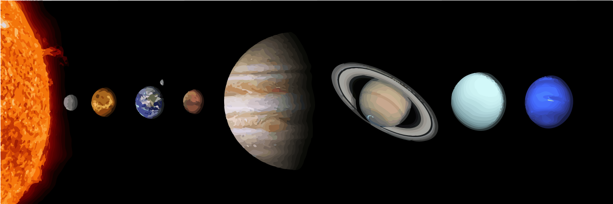

Concepto
El Sistema Solar, una maravilla cósmica que ha fascinado a la humanidad desde tiempos inmemoriales, es un vasto sistema planetario compuesto por el sol, los planetas, sus lunas, asteroides, cometas y otros cuerpos celestes. Su nombre, "sistema solar", proviene del latín "sōl", que significa "sol", y "systēma", que se traduce como "conjunto ordenado". Así, el término refleja la estructura organizada de cuerpos celestes que orbitan alrededor de nuestra estrella, el Sol.
Evolución
La evolución del Sistema Solar es un relato épico que se remonta a unos 4.600 millones de años atrás, cuando una vasta nube de gas y polvo interestelar comenzó a colapsar bajo la influencia de su propia gravedad. Este proceso de contracción dio lugar a la formación de un disco protoplanetario alrededor de una joven estrella en formación, que eventualmente se convertiría en nuestro Sol. En este disco, los materiales se condensaron y se agruparon para formar los planetas, lunas, asteroides y cometas que conocemos hoy en día.

Con el paso de los eones, el Sistema Solar ha experimentado innumerables cambios y eventos cósmicos. Desde las colisiones catastróficas que dieron forma a los planetas hasta la migración de asteroides y cometas a través del espacio, cada evento ha dejado su marca en la evolución de nuestro vecindario estelar. Y en el transcurso de los últimos siglos, los avances científicos han permitido a la humanidad desentrañar muchos de los misterios del Sistema Solar, desde la descripción precisa de las órbitas planetarias hasta el estudio de la composición química de los cuerpos celestes.
Hoy en día, nuestra comprensión del Sistema Solar sigue creciendo gracias a misiones espaciales, observaciones telescópicas y estudios científicos continuos. Desde la búsqueda de vida en otros planetas hasta la exploración de mundos distantes, la curiosidad humana sigue impulsando nuestra exploración y comprensión del vasto cosmos que llamamos hogar. En esta página web, nos embarcaremos en un viaje por el Sistema Solar para descubrir sus maravillas, sus misterios y su impacto en nuestro entendimiento del universo. ¡Bienvenidos a este fascinante viaje a través del espacio y el tiempo!
¡Embárcate en un viaje inolvidable por el vasto y fascinante universo que nos rodea! A continuación, te espera un video especialmente diseñado para ampliar tus horizontes y sumergirte aún más en la majestuosa belleza del sistema solar. Prepárate para una experiencia que no solo alimentará tu curiosidad, sino que también inspirará asombro y admiración por el infinito universo en el que flotamos. No dejes pasar esta oportunidad de expandir tus conocimientos y tu conexión con el espacio que nos rodea. Haz clic, sumérgete y deja que el viaje comience.